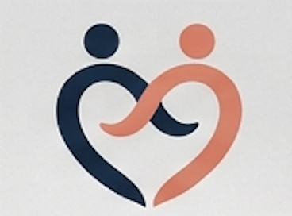
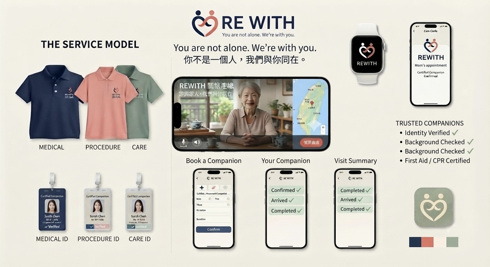
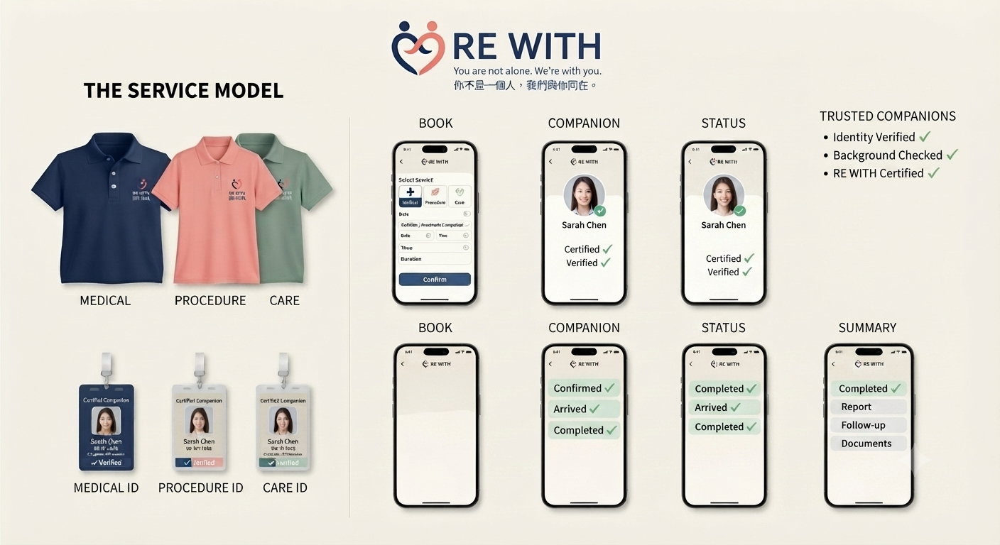

01 · A REAL EXPERIENCE
我曾經就是那個需要陪診的人。
我曾經因為預防性的醫療手術需要全身麻醉。
我需要的不是護理師，也不是看護。
我只需要一個正常的成年人：陪我到醫院、完成流程、等我恢復，確認我能安全回家。
家人當時也有各自的醫療問題，或人在海外。我不想增加家人的負擔。
最後，我請一位朋友陪我完成。
那如果……沒有這位朋友呢？

就醫陪伴、陪診與安全服務平台。

我曾經因為預防性的醫療手術需要全身麻醉。
我需要的不是護理師，也不是看護。
我只需要一個正常的成年人：陪我到醫院、完成流程、等我恢復，確認我能安全回家。
家人當時也有各自的醫療問題，或人在海外。我不想增加家人的負擔。
最後，我請一位朋友陪我完成。
那如果……沒有這位朋友呢？
單身、獨居、子女在海外、家人住不同城市、單親家庭……
我們服務的，就是這中間長期缺少標準化的需求。
輸入醫院＋時間＋需求，找到認證陪診員。
身分驗證 → 資格審核 → 背景查核 → 事前訓練 → 認證接單
門診・檢查・候診・情緒陪伴
特定檢查・手術前後・麻醉後陪同
護理師及符合資格的醫事人員
陪診員不執行醫療行為。
把需求、認證、預約與服務進度放在同一個平台。


媽媽需要做檢查，女兒無法回台灣。
服務完成：媽媽已安全返家。
遠距家屬的照顧代理，是我們未來重要的市場。
每筆服務交易，由平台收取服務費。
先驗證服務，回饋升級優化，再擴張。
認證制度＋服務標準＋陪診員網路＋服務紀錄＋媒合系統
姚妍萱｜Founder of Re-Re
設計背景，2016 年創立 Re-Re，從設計、品牌、產品、供應鏈到市場，一步一步把理念變成可以被市場購買的產品。
我從十幾歲到 35 歲，人生中無數次一個人走進醫院，接受治療與手術。
所以我知道這個需求不是想像出來的。
也許很多人不像我這麼幸運，總有朋友願意陪我動手術。
第一階段：建立平台、服務標準與台北市場驗證。
你不是一個人，我們與你同在。
No one should have to face healthcare alone.
正在尋找一起關懷高齡化社會的夥伴。